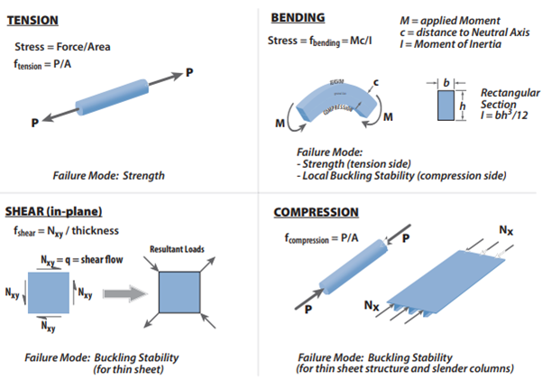
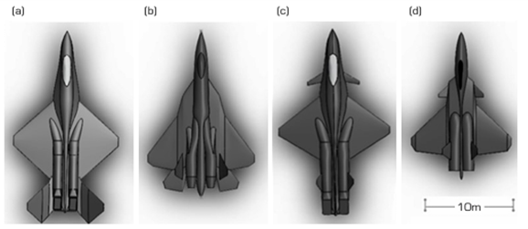
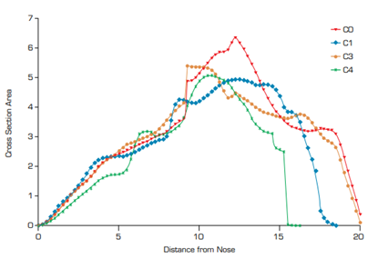
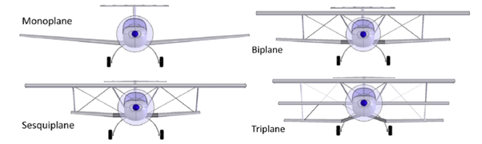
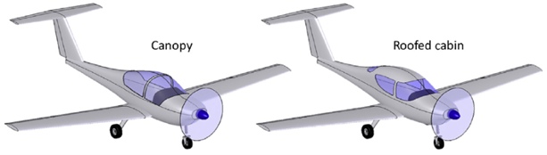

The overview for this article is an insight of what goes into developing an aircraft, such as the
conceptual layout of aircraft’s which relies on computational simulations. Comparing different
models and searching for advantages or disadvantages of using a certain model in contrast to
another model. The main types stress how the aircraft goes through the air and how the wing
structure of a plane effects its aerodynamics, are discussed.
Flight of an Aircraft
When the aircraft is accelerating, there is a difference in air pressure, at the surfaces of the wings. The top section of
the wing experiences a low pressure, than the bottom section of the wing which creates a net upwards force, causing the aircraft to fly. (Robert, 2021)
Stress Examination on Aircraft
When an aircraft is in flight, “the primary objective of stress analysis is to insure that each
structural member of the airframe is properly designed and sized to meet structural requirements with the lowest possible weight”.(Nicolai, L. M. (Leland M. et al., 2010)
Usually there are several stresses an aircraft undergoes, although there are the fundamental types of stress an aircraft normally encounters: Tension, bending, shear and compression.
The use of stress examination is to understand the involvement of stress and loading whilst trying to predict possible failure points within the structural frame and reducing the weight of the
components to not interfere with performance of the aircraft within a certain constraint.Tension refers to the stretching force of a material and bending refers to applying a force to one or both sides of
a material which makes a curve. Shear is a force which acts in the same direction as the surface of a material and compression is a pressing force that makes the material smaller.
Quality control is essential for aircraft due to the aircraft maintaining the external forces of the environment in various weather conditions, safety parameters for the pilot or
emergency cases if the aircraft is malfunctioning, and overall reliability and reusability of the aircraft of sustained flight. Hence, quality control should be set as a high priority because you
would not want to waste resources, energy, and time on an aircraft that does not do the job.(Nicolai, L. M. (Leland M. et al., 2010)

Figure 1: Basic types of stress and loads. Taken from (Nicolai, L. M. (Leland M. et al., 2010)
Simulations of Conceptual Designs of Fighter Aircraft
Traditionally, scaled down models were produced and used to test the aircraft design however this is very time consuming therefore the solution is
to use computational models such as computational fluid dynamics (CFD) which can be extremely useful by taking “a scaled down model that is geometrically similar to the intended configuration”
(Nicolai, L. M. (Leland M. et al., 2010) and implementing several simulations of an that can display insightful data on any problems or improvements to be made on an aircraft
in a consistent and repeatable manner.Furthermore, since modern aircraft have to aerial manoeuvres for defensive or offensive purposes “can be used as a decent alternative
to experimentation for conceptual design analysis”.(Nicolai, L. M. (Leland M. et al., 2010)

Figure 2: Concept computer design models. Taken from (Siddiqui, W. et al., 2021)
(a) C-0
(b) C-1
(c) C-2
(d) C-3
The concepts of the computer aided design model were modelled off the basis of the transonic area rule, which is a design approach to minimise the wave drag; wave drag
is when an aircraft is moving at subsonic (below Mach 0.8) or transonic speeds (Mach 0.8-1.2) and there is a shock wave cone behind the aircraft. As we can see in figure 3,
“sharp edges showing the abrupt changes in area distribution for C-0 and C-2 make these airframes more vulnerable to the formation of strong shock wave and consequent
drag rise in transonic flight.” (Siddiqui, W. et al., 2021)

Figure 3: The longitudinal area dispersion for approximation to minimise wave drag. Taken from (Siddiqui, W. et al., 2021)
Conceptual Formation of a Wing Structure
Aircrafts had intriguing concepts of how the wings are placed on the fuselage of a plane. Aircraft manufacturers wanted their planes to have an aerodynamic shape for the wings
to generate speed and lift for their aircraft whilst reducing the drag, so therefore planes would require different wing configurations, such as “the monoplane is by
far the most common configuration as it is without a doubt the easiest to make aerodynamically efficient. The primary advantage of the biplane or triplane configuration is the large wing area that can be
packed in a small wingspan. This allows for very maneuverable airplanes with relatively low stalling speed without flaps.” (Gudmundsson, S., 2014)

Figure 4: Wing configurations. Taken from (Gudmundsson, S., 2014)
Comparison between Canopy or Roofed Cabin
The roofed cabin advantage is that there is an increased protection from an accidental turn over but requires an entry door to be included for the accessway, however the roofed
cabin reduces the field of view for the pilot that can result in an increased chance of a collision mid-air. A canopy can offer extraordinary field of view whereas high temperatures are a
hinderance to a canopy and “acrylic canopy must be installed and operated with care (if flexible), as cracks may develop around fastener holes”. (Gudmundsson, S., 2014)

Figure 5: An aircraft with a canopy or roofed cabin. Taken from (Gudmundsson, S., 2014)
Conclusion
Using computational simulations is a far superior method and makes scaled down models far less efficient in testing and experimenting structure and design. This results in
the scaled down models becoming mostly outdated since factoring human randomness and error makes the uncertainty of testing structures less predictable which can cause a safety violation.
Additionally, stress examination is vital for the safety of the passengers and the pilot which is in computational simulations field in by simulating thousands of variables and factors which they can
leave in the background and can give engineers and researchers time to focus on other regulations.